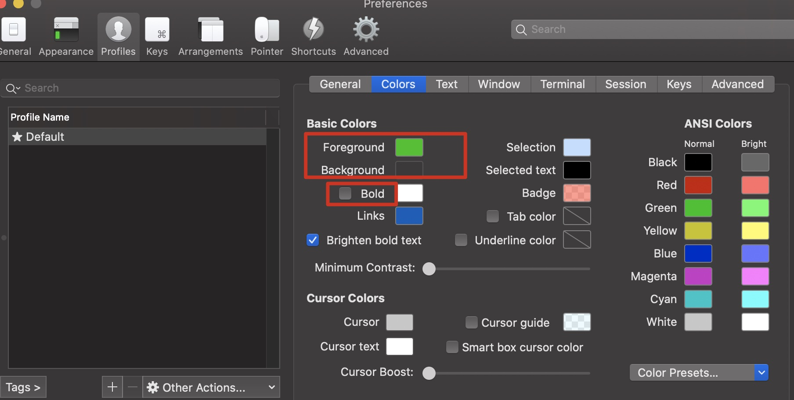

一些个人的配置和环境问题
终端 item2 背景和提示颜色
这里字体颜色就是旁边的Green

背景色如下
可以设置透明度和毛玻璃效果，但是我感觉不好看没有使用
除此之外，修改windows的新终端的窗口大小，我设置的Columns: 105，Rows:28
Text中字体大小：15
关闭声音：Preferences -> Profiles -> Terminal -> silence bell
终端显示 安装zsh
1 2 brew install zsh chsh -s /bin/ zsh
安装oh-my-zsh
1 git clone https://gi thub.com/robbyrussell/ oh-my-zsh.git ~/.oh-my-zsh
1 cp ~/.zshrc ~/ .zshrc.bak
1 cp ~/.oh-my-zsh/ templates/zshrc.zsh-template ~/ .zshrc
推出bash,重新进入zsh
zsh配置上方显示主机名
vim ~/.zshrc
1 2 3 4 5 6 7 8 9 10 11 12 13 # Uncomment the following line to disable auto-setting terminal title. DISABLE_AUTO_TITLE="true" # set title # uncomment DISABLE_AUTO_TITLE="true" TERM_TITLE="\e]0;%n@%m\a" precmd() { print -Pn "$TERM_TITLE" } # set title to running process preexec () { print -Pn "\e]0;%n@%m [$3]\a" }
设置Promt
在.zshrc里配置，这种显示好处就是截图或者复制终端的结果比较容易看
1 PROMPT='%{$fg_bold[red]%}[%n@%m %{$fg[red]%}%c]%(!.#.$)%{$reset_color%} '
最终效果
设置代理 .zshrc设置代理快捷命令
1 2 3 4 5 6 7 8 9 10 11 12 13 14 15 16 17 18 19 20 21 22 23 24 25 26 function proxysockes_on(){ #配置http访问 export http_proxy =socks5://172.16.42.1:1086 export https_proxy =socks5://172.16.42.1:1086 export all_proxy =socks5://172.16.42.1:1086 echo '**************开启当前终端socks5代理**************' } function proxyhttp_on(){ export http_proxy =http://172.16.42.1:1087 export https_proxy =http://172.16.42.1:1087 export all_proxy =http://172.16.42.1:1087 echo '*************开启当前终端http代理**************' } function proxy_off(){ #移除代理 unset http_proxy unset https_proxy unset all_proxy echo '************关闭当前终端代理***********' }
proxysockes_on命令开始socks5代理
proxyhttp_on命令开启http代理
proxy_off关闭代理
zsh插件 自动补全插件
1 2 3 4 5 6 7 git clone https://gi thub.com/zsh-users/ zsh-autosuggestions $ZSH_CUSTOM /plugins/ zsh-autosuggestions vim ~/.zshrc plugins=(git zsh-autosuggestions) source ~/.zshrc
IDEA 最近项目文件 最近碰到一个问题，idea的项目是在外接硬盘中，现在没有插硬盘，打开idea的时候找不到最近项目以至于卡死。
mac下解决方法如下：
JetBrains根目录：
1 /Users/ shadowflow/Library/ Application Support/JetBrains
我使用的是IntelliJIdea2021.2，进入该目录
1 /Users/ shadowflow/Library/ Application Support/JetBrains/ IntelliJIdea2021.2
再进入options目录，打开recentProjects.xml
删除掉map标签中的entry标签
删除之后就留了一个项目，如下
1 2 3 4 5 6 7 8 9 10 11 12 13 14 15 16 17 18 19 20 21 <application > <component name ="RecentProjectsManager" > <option name ="additionalInfo" > <map > <entry key ="$USER_HOME$/IntelliJIDEAProjects/HelleWorld" > <value > <RecentProjectMetaInfo frameTitle ="HelleWorld – MainActivity.kt" projectWorkspaceId ="1xZ3x6KCEsIcFlenjelbyS8p9Nf" > <option name ="binFolder" value ="$APPLICATION_HOME_DIR$/bin" /> <option name ="build" value ="IU-212.4746.92" /> <option name ="buildTimestamp" value ="1627369780208" /> <frame x ="0" y ="23" width ="1440" height ="877" extendedState ="6" /> <option name ="productionCode" value ="IU" /> <option name ="projectOpenTimestamp" value ="1630551739420" /> </RecentProjectMetaInfo > </value > </entry > </map > </option > <option name ="lastProjectLocation" value ="$USER_HOME$/code/java/study" /> </component > </application >
java 配置 下载
https://www.oracle.com/java/technologies/downloads/#java8
mac下java路径
1 /Library/ Java/JavaVirtualMachines
环境变量
1 2 3 4 export JAVA_HOME=/Library/ Java/JavaVirtualMachines/ jdk1.8.0 _301.jdk/Contents/ Home export CLASSPATH=$JAVA_HOME /lib/ tools.jar:$JAVA_HOME /lib/ dt.jar:$JAVA_HOME /lib export PATH=$JAVA_HOME /bin:$PATH
找不到com.sun tools.jar 和jconsole.jar
1 2 3 4 5 6 7 8 9 10 11 12 13 14 <dependency> <groupId> com.sun</groupId> <artifactId> tools</artifactId> <version> 1.8 </version> <scope> system</scope> <systemPath> ${JAVA_HOME}/lib/ tools.jar</systemPath> </dependency> <dependency> <groupId> com.sun</groupId> <artifactId> jconsole</artifactId> <version> 1.8 </version> <scope> system</scope> <systemPath> ${JAVA_HOME}/lib/ jconsole.jar</systemPath> </dependency>
Maven .zshrc
1 2 3 export MAVEN_HOME =/Library/Java/JavaVirtualMachines/apache-maven-3.8.2export PATH =$MAVEN_HOME /bin:$PATH
修改源/Library/Java/JavaVirtualMachines/apache-maven-3.8.2/conf/settings.xml
1 2 3 4 5 6 7 8 <mirrors > <mirror > <id > alimaven</id > <name > aliyun maven</name > <url > http://maven.aliyun.com/nexus/content/groups/public/</url > <mirrorOf > central</mirrorOf > </mirror > </mirrors >
Golang 环境变量
1 2 3 4 export GOROOT =/usr/local/goexport GOPATH =$HOME /goexport PATH =$PATH :$GOROOT/bin:$GOPATH/bin
软件问题 parallels desktop 卸载parallels desktop后，如何清除多余的“打开方式”项？
执行如下命令
1 /System/ Library/Frameworks/ CoreServices.framework/Frameworks/ LaunchServices.framework/Support/ lsregister -kill -r -domain local-domain system -domain user
Mos https://github.com/Caldis/Mos
mac上的鼠标滚轮方向调整工具
系统 debian:10 java 1 2 3 4 5 6 7 8 9 10 11 12 13 14 15 16 sudo tar -C /usr/local -xzf jdk-8u251-linux-x64.tar.gz export JAVA_HOME =/usr/local/jdk1.8.0_251export CLASSPATH =$JAVA_HOME /lib/tools.jar:$JAVA_HOME/lib/dt.jar:$JAVA_HOME/libexport PATH =$JAVA_HOME /bin:$PATH
maven 1 2 3 4 5 6 7 8 9 10 11 12 13 14 15 16 17 18 19 wget https:// dlcdn.apache.org/maven/m aven-3 /3.8.5/ binaries/apache-maven-3.8 .5 -bin.tar.gz sudo tar -C /usr/ local -xzf apache-maven-3.8 .5 -bin.tar.gz export MAVEN_HOME=/usr/ local/apache-maven-3.8 .5 export PATH=$MAVEN_HOME /bin:$PATH 修改源/user/ local/apache-maven-3.8.5/ conf/settings.xml <mirrors> <mirror> <id>alimaven</id> <name>aliyun maven</name> <url>http://m aven.aliyun.com/nexus/ content/groups/ public/</u rl> <mirrorOf>central</mirrorOf> </mirror> </mirrors>
vim